The following pictures show n L's (with short side 1) packed inside the smallest known domino (with short side length s).
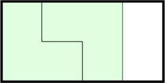 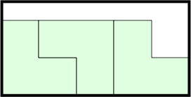 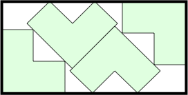 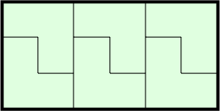 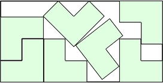 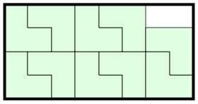 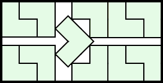 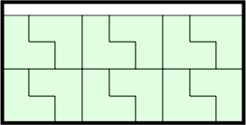 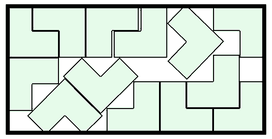 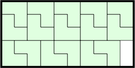 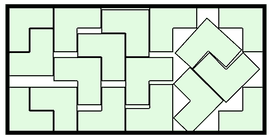 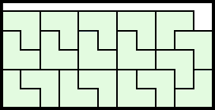 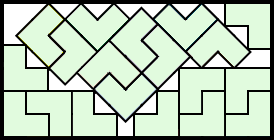 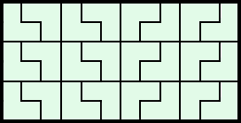 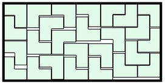 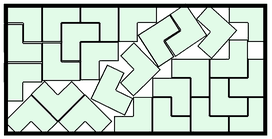 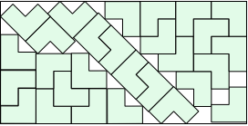 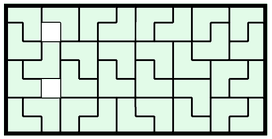 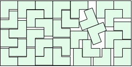 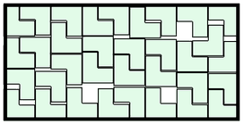 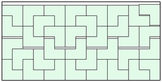 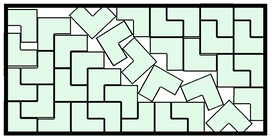 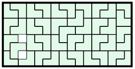 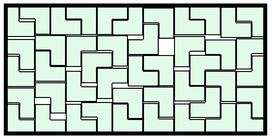 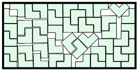 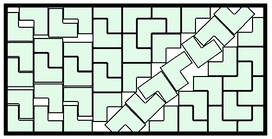 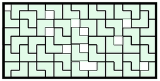
1.-2.
s = 2
Trivial.
3.
s = 5/2 = 2.5
Trivial.
4.
s = 6(1+√2)/5 = 2.897+
Found by Erich Friedman in April 2026.
5.-6.
s = 3
Trivial.
7.
s = 3.73873+
Found by Joshua Wolk in September 2026.
8.-10.
s = 4
Trivial.
11.
s = 3(6+√2)/5 = 4.448+
Found by Maurizio Morandi in April 2026.
12.
s = 9/2 = 4.5
Trivial.
13.
s = 4.89705+
Found by Joshua Wolk in September 2026.
14.-16.
s = 5
Trivial.
17.
s = 5.44545+
Found by Joshua Wolk in September 2026.
18.
s = 11/2 = 5.5
Trivial.
19.
s = 3+2√2 = 5.828+
Found by Maurizio Morandi in April 2026.
20.-24.
s = 6
Trivial.
25.-26.
s = 13/2 = 6.5
Trivial.
27.
s = 6.88430+
Found by Joshua Wolk in September 2026.
28.
s = 13/5 + 31√2/10 = 6.98406+
Found by Yanis Gomes in October 2026.
29.-32.
s = 7
Trivial.
33.
s = 7.47946+
Found by Yanis Gomes in October 2026.
34.
s = 15/2 = 7.5
Trivial.
35.
s = 15/2 = 7.5
Found by Joost de Winter in October 2026.
36.
s = 7.86298+
Found by Joshua Wolk in September 2026.
37.-42.
s = 8
Trivial.
43.-45.
s = 17/2 = 8.5
Found by Joshua Wolk in September 2026.
46.
s = 8.84493+
Found by Joshua Wolk in September 2026.
47.
s = 8.90693+
Found by Joshua Wolk in September 2026.
48.-50.
s = 9
Trivial.